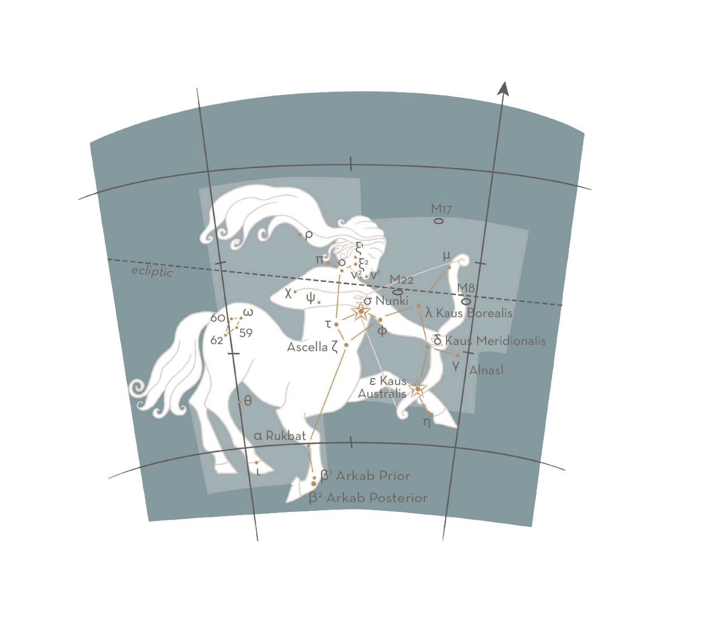

November - December
SGR — SAGITTARII / THE ARCHER
The ninth zodiacal constellation, Sagittarius is a centaur, half-man, half-horse, aiming an arrow toward Scorpius. Prominent in the Southern hemisphere, it culminates at midnight in June and July. Above middle latitudes in the North, it sits low on the southern horizon, partly obscured. It is on the eastern side of the Milky Way, 25° southwest of Altair (α Aql; pages 46—7). If the archer were to raise his arrow a few degrees, his aim would be through the Milky Way to the Galactic Centre. The Sun appears in this constellation at the December solstice.


MAJOR STARS
α — Rukbat, 4.1, blue-white
The “knee”. Despite being α, this is not the brightest star in the constellation (see ε below).
β1 and β2 — Arkab Prior and Arkab Posterior, 4.3 and 4.5, blue-white and white
An unrelated but visually close pair. “Arkab” is the Achilles tendon from the calf to the heel.
γ — Alnasl, 3.0, yellow
This star marks the “point” of the arrow.
ε — Kaus Australis, 1.9, blue-white
The “southern bow” is the lucida, a giant, 88 light years distant. It marks the archer’s bow, together with the third-magnitude Kaus Meridionalis (δ Sgr) and Kaus Borealis (λ Sgr).
σ — Nunki, 2.0, blue-white
Nunki marks the hand of the archer, drawing back the arrow. In Assyro-Babylonian times, it was known as “the star proclaiming the sea”. The “sea” is the portion of sky that rises to the east after Sagittarius and contains Aquarius, Capricornus, Delphinus, Cetus, Pisces and Piscis Austrinus, all associated with water.
ζ — Ascella, 2.6
The name for this star derives from the Latin axilla, meaning “armpit”.
M8, M17, M22
Within or at the borders of naked-eye observation are M8, the Lagoon Nebula — a large patch equivalent in area to three Full Moons — and the globular cluster M22, visible at fifth magnitude but best observed through binoculars. M17 is the Omega or Horseshoe Nebula.
STARLORE
The Greeks associated Sagittarius with Crotus, the satyr (part man, part goat, with a long, horse-like tail), and it was often illustrated standing on two legs. The Roman mythographers identified him with the gentle and wise centaur Chiron, which has led to frequent confusion with the Southern constellation Centaurus (see pages 74—5). However, there is a distinct difference between the two creatures: Sagittarius is a hunter, traceable to the Mesopotamian archer-god Nergal, who was associated with the wrathful god Irra of war and fire (in Greek myth, Ares; in Roman, Mars).
